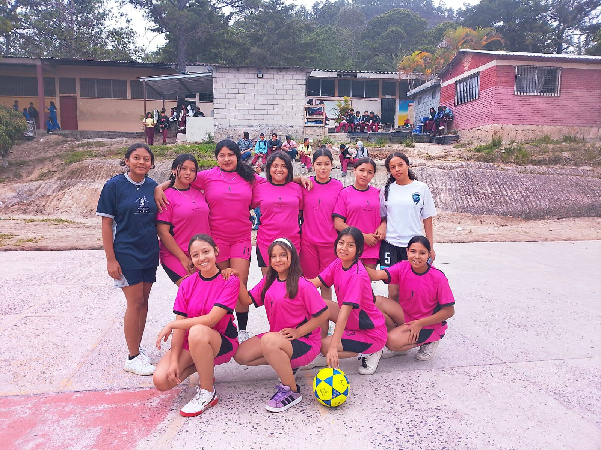

Chicas del Instituto Técnico Francisco Miranda participan en torneo de fútbol intercolegial
Con entusiasmo y gran espíritu deportivo, las estudiantes del Instituto Técnico Francisco Miranda participaron en un emocionante torneo de fútbol femenino, enfrentando a equipos de distintos colegios de la región.

El evento se llevó a cabo en las canchas del complejo deportivo municipal, donde nuestras jóvenes demostraron no solo su habilidad con el balón, sino también valores como el trabajo en equipo, el respeto y la perseverancia.
Bajo la dirección de sus entrenadores y el apoyo de docentes y familiares, las chicas lograron destacarse por su desempeño y disciplina en cada partido disputado. La comunidad educativa mostró su orgullo al ver representado al instituto con tanto compromiso.
La participación en este tipo de competencias refuerza el desarrollo integral de nuestras estudiantes, promoviendo estilos de vida saludables, confianza en sí mismas y oportunidades para el crecimiento personal y académico.